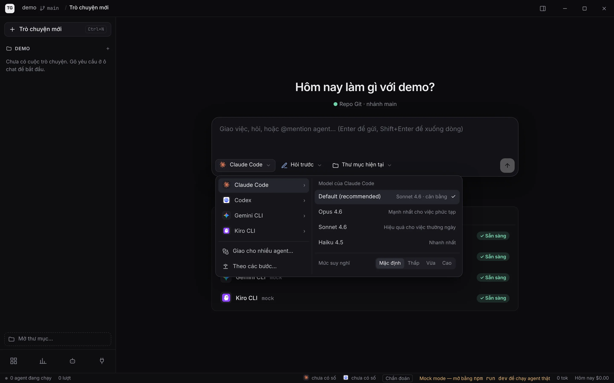
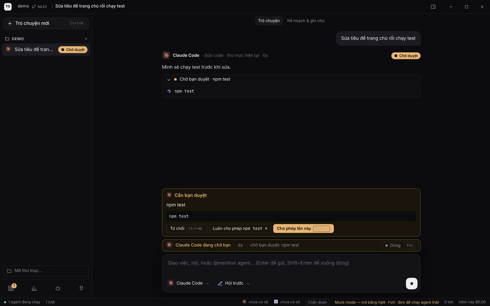
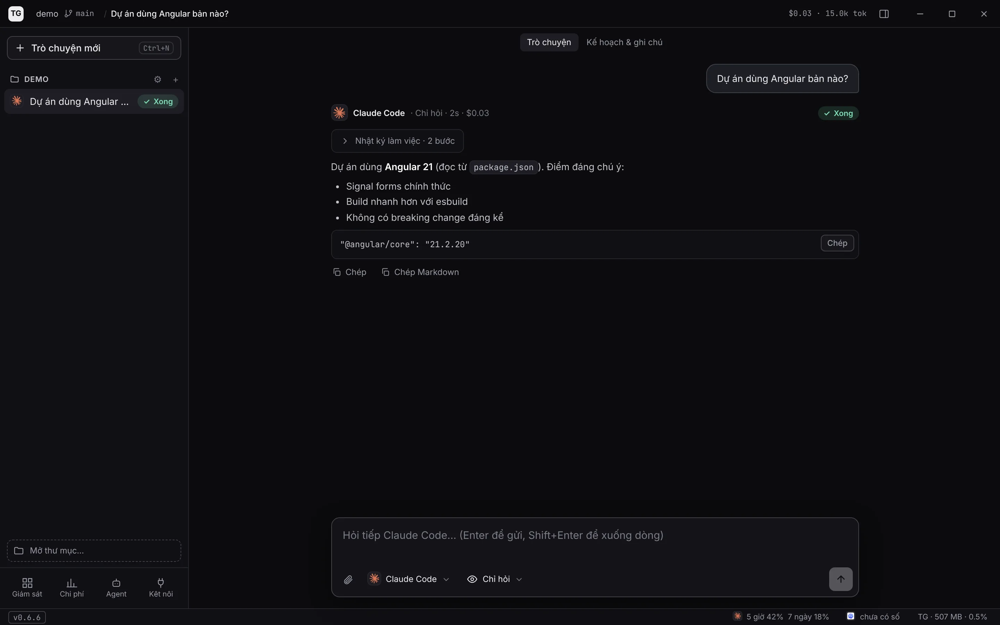

Giao việc cho mọi agent code, trong một cửa sổ
TG Studio chạy các agent bạn đã cài trên máy, cho bạn xem chúng làm gì, duyệt từng lệnh và từng thay đổi trước khi vào code, và biết mỗi việc tốn bao nhiêu.
 Claude Code
Claude Code
 Codex
Codex
 Gemini CLI
Gemini CLI
 Kiro CLI
Kiro CLI
Video 1 phút ở chế độ mẫu: hỏi, sửa code, duyệt thay đổi, chuyển việc giữa các agent, xem chi phí.
Làm được gì
Agent nào cũng dùng tài khoản của chính nó. TG Studio không gọi API của hãng nào và không giữ mật khẩu hay khoá.
Một cuộc trò chuyện, nhiều agent
Chọn agent, model và mức suy nghĩ cho từng câu. Đổi agent giữa chừng, agent mới nhận tóm tắt những gì đã nói.
Bạn quyết agent được làm gì
Chỉ hỏi, Sửa code · hỏi trước, hoặc Tự động. Lệnh nhạy cảm hiện thẻ duyệt; git push và merge luôn bị chặn.
Duyệt từng đoạn thay đổi
Làm thẳng trong thư mục rồi Giữ / Hoàn tác từng đoạn, hoặc làm trong bản nháp riêng tạo từ nhánh bạn chọn.
Biết ai đang làm gì
Đang làmChờ duyệt✓ Xong ngay ở cột trái, và một dòng trạng thái trên ô chat.
Giao cho nhiều agent cùng lúc
Cùng một việc cho Claude và Codex, mỗi bên một bản nháp, rồi so sánh và chọn bản tốt nhất hoặc ghép từng đoạn.
Hỏi nhanh như dùng CLI
Ở Chỉ hỏi, Claude giữ một phiên cho cả cuộc trò chuyện nên câu sau trả lời ngay, và chữ hiện ra trong lúc agent đang viết.
Agent chuyển việc cho nhau
Claude đề xuất giao phần tiếp theo cho Codex (hoặc ngược lại). Bạn bấm đồng ý, agent kia làm tiếp trong cùng cuộc trò chuyện và cùng thư mục.
Chi phí trung thực
Token và chi phí theo từng lượt, theo ngày, hạn mức gói Claude/Codex, ngân sách và xuất CSV.
Giao diện
Ảnh chụp ở chế độ mẫu. Xem đủ 16 màn hình và chế độ trình chiếu ở trang toàn cảnh.



Cài đặt
Khoảng 5 phút nếu máy đã có agent.
- Windows: giải nén và chạy bộ càiGiải nén tệp .zip, chạy
Setup.exebên trong. Bộ cài chưa ký số, nên SmartScreen sẽ cảnh báo: bấm More info → Run anyway. - macOS: giải nén, mở .dmg, kéo vào ApplicationsBản chưa ký số của Apple: lần đầu mở, bấm chuột phải vào TG Studio → Open → Open. Nếu macOS vẫn chặn: System Settings → Privacy & Security → Open Anyway. Nếu báo "app bị hỏng": chạy một lần trong Terminal
xattr -cr "/Applications/TG Studio.app". Chạy được trên cả Mac Intel và Apple Silicon. - Cài ít nhất một agent và đăng nhậpVí dụ Claude Code:
npm i -g @anthropic-ai/claude-coderồi chạyclaudeđể đăng nhập. Kiro:kiro-cli login. - Mở thư mục dự án và gõ yêu cầuChọn quyền Chỉ hỏi để thử trước: agent chỉ đọc code, không sửa gì.
Máy cần có
- Windows 10 hoặc 11, 64-bit; hoặc macOS 11 trở lên (Intel hay Apple Silicon)
- Ít nhất một agent CLI: Claude Code, Codex, Gemini CLI hoặc Kiro CLI
- Node.js (có
npx) để app tải adapter của Claude và Codex lần đầu - Git, nếu muốn dùng chế độ Sửa code